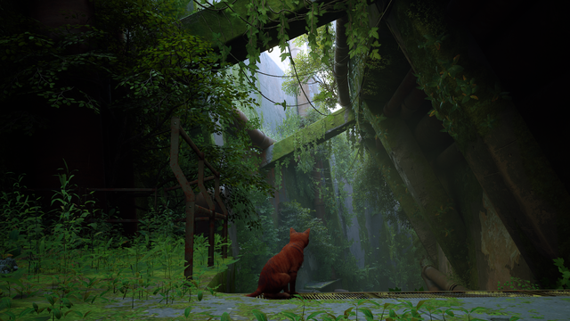

Stray is a third-person adventure game. The player controls a stray cat, who traverses by leaping across platforms and climbing up obstacles and can open new paths by interacting with the environment, such as climbing in buckets, overturning paint cans, operating a vending machine, and clawing at objects. They solve puzzles to progress the narrative, often involving moving obstacles. Optional activities include sleeping, meowing, and nuzzling up to non-player characters, most of which often elicit a response. Some levels have open-world elements, allowing the player to roam at their freedom. The player is accompanied by a drone companion, B-12, who assists by translating the language of other characters, storing items found throughout the world, providing light, and hacking into various technologies to open paths and solve puzzles. Throughout the game, the player finds several of B-12's memories, providing more context for the story. Most of these memories are optional, but some are unlocked through story progression. The player can collect badges, including several optional throughout the world, which are displayed on the cat's backpack.
